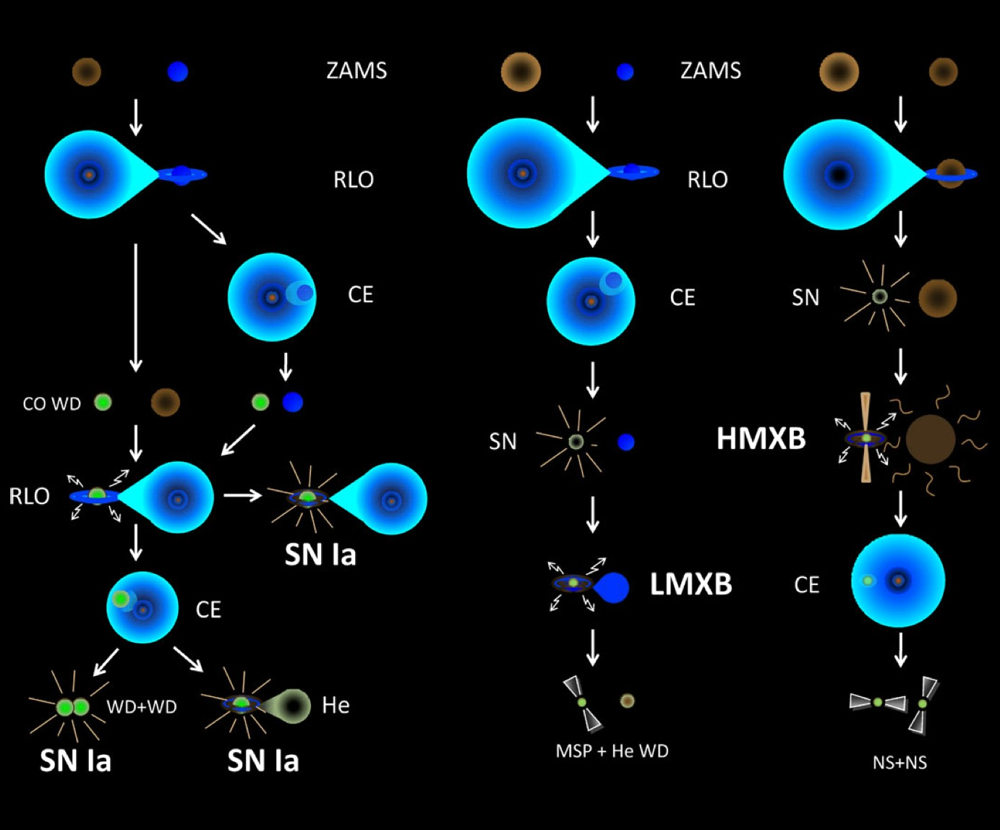
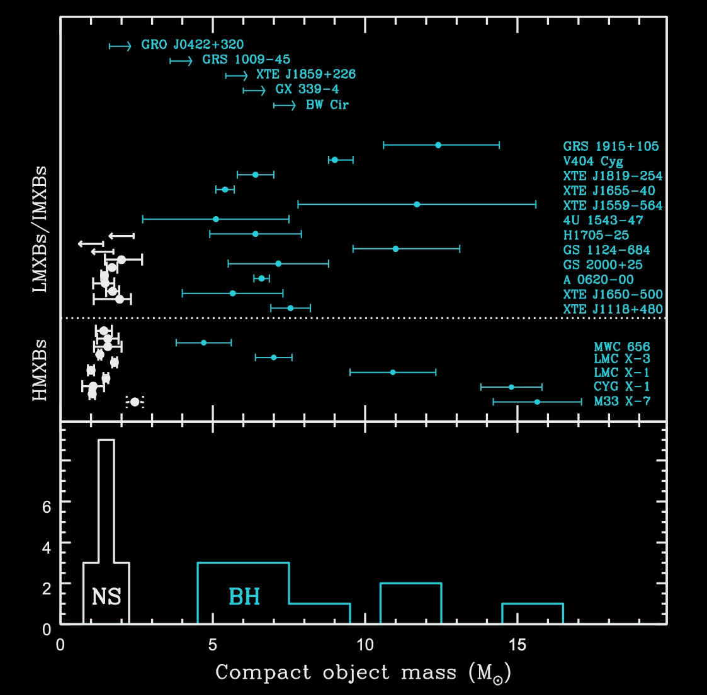

Products of Binary Evolution II#
Additional Recommended Resource: Chapter 10, Binary Stars by Onno Pols.
Wednesday, Mar. 24, 2025
astrophysics of stars and planets - spring 2025 - university of arizona, steward observatory
Today’s Agenda#
Announcements - PCA 14 Due Friday Mar. 28 before class (2m)
Reading Overview/Key Points (10m)
ICA 17 - High-Mass X-Ray Binary (25m)
Debrief + Share Results (10m)
Fate of Close Binary Star Systems#
We can have a variety of binary star systems created, below are a few examples which include a period of common-envelope evolution.
{kind=link}
Examples of evolutionary channels where CEE plays a crucial role in the formation of the final system. Left:presents a variety of ways to form potential SN Ia progenitors. Right:the formation of systems containing neutron stars: one route by which a binary millisecond pulsar may form, and one way to produce a double pulsar (formation of which could also in- volve an additional CE phase before the first SN).
Credit: Ivanova et al 2013.
Common Envelope Onset and Evolution#
Common-envelope Evolution occurs when the companion of the mass-losing star becomes engulfed by the envelope of the donor. CEE can be initiated by two main circumstances:
dynamically unstable mass transfer - when the donor cannot shrink fast enough to stay within its Roche lobe
occurs when the donor has a deep convective envelope (late case B and case C) and is of similar mass or more massive than its companion,
or when the donor has a radiative envelope (early case B) but is much more massive than its companion, by a factor >∼ 4 – high \(q=M_{d}/M_{a}=M_{2}/M_{1}\).
when the spin angular momentum is more than ~1/3 times the orbital angular momentum, which causes tidal interaction to become unstable and the companion is literally dragged into the donor’s envelope by tidal forces.
can occur when the mass ratio is very large, large \(q\).
Okay, so you might be wondering how I got myself in this situation – what happens to the companion??
Once the companion is inside the donor’s envelope:
the friction between the motion of the companion and the envelope removes angular momentum from the orbital motion, and releases energy
the orbit shrinks, and the envelope is brought into rotation and heated
This process continues until enough energy is added to the envelope to expel it.
OR,
the companion star may spiral-in until it merges with the core of the mass donor
Outcome of CEE#
The outcome of a common envelope is often estimated based on the picture of conversion of orbital energy into binding energy of the envelope.
We can measure its efficiency
Definition 120
Definition 121
and \(\Delta E_{\rm{bind}}\) is estimated as the binding energy of the envelope at the beginning of CEE:
Definition 122
where \(\lambda\) is a dimensionless quantity used to describe the density distribution of the envelope.
We can finally derive and estimate of the final orbital separation for the system after CEE as:
Definition 123
here, \(r_{L,d}= R_{L,d}/a_{i}\), 3D simulations suggest \(\alpha_{\rm{CE}}\lt1\).
Example 3D Hydrodynamic Simulation of CEE#
\(M_{i}=10M_{\odot}\) and mass ratio \(q=M_{2}/M_{1}=0.53\) BH companion.
Movie of density evolution in the orbital plane for the simulation with a BH-mass companion (marked with a cross symbol; the centre of the primary star is marked with a plus symbol). Credit: Moreno et al 2022.
Formation of X-ray Binary Systems#
Systems where a star transfers matter either by Roche-Lobe or a stellar wind to a compact companion object – typically a neutron star (NS) or a black hole (BH).
These compact remnants are revealed by persistent/transient X-ray activity which is triggered by mass accretion.
high-mass X-ray binaries (HMXRB)#
The high-mass donors (over about 8 \(M_{\odot}\)) are called high-mass X-ray binaries (HMXRB). The donor is typically a B-type main sequence star or a blue supergiant. HMXRB are mostly found close to the galactic disk.
low-mass X-ray binaries (LMXRB)#
the donor of 1.5 \(M_{\odot}\)) may be a main sequence star.
{kind=link}
Top: compact remnant masses measured in X-ray binaries. Neutron stars and black holes are indicated in black and red colors, respectively. 4U 1700-37 is plotted in dotted-style line because the nature of the compact star is uncertain. The horizontal dotted line divides LXMBs/IMXBs from HMXBs. Bottom: observed distribution of neutron stars and black hole masses. Credit: Casares et al 2016.
In-Class Assignment 17#
In-Class Assignment 17 can be found here.